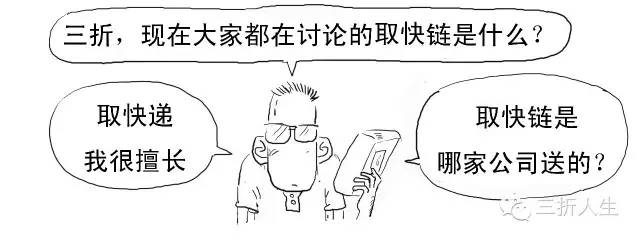
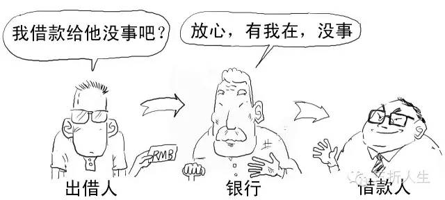
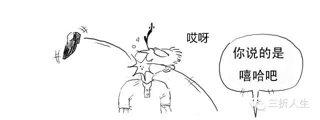
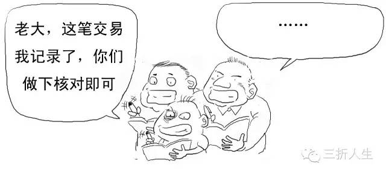
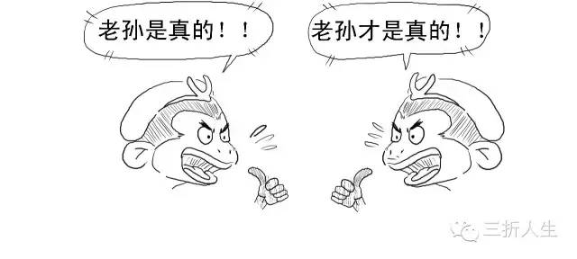
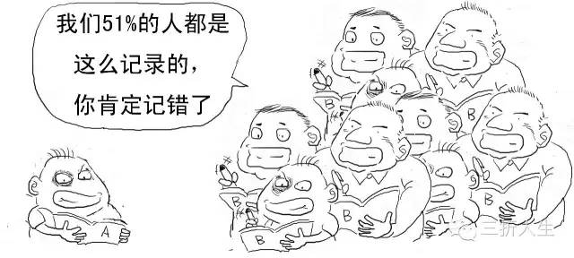

Key technical points of this article



Get quick chain? You mean blockchain, right?
To explain blockchain clearly, let's first tell a story.
You must have heard the story of "three people make a tiger," right?
SupposeOne personTells you, oh no, there's a tiger on the street. Do you believe it?

Geez, why aren't you playing by the rules? You're supposed to say you don't believe it!

Let's start over! We're talking about a real tiger!


Good! Very good!! An Oscar-worthy performance!!!
Continue, at this point switch toA crowd of peopleTell you this thing!

Let's switch to another scenario.
If a highly respected elder whom you trust very much tells you this, what would you think?

Yes, this is the so-called power of trust. You don't trust an individual without sufficient credibility, but you will trustA group of individualsorAn individual with sufficient credibility。
In real society, the bank is this individual (center) with sufficient credibility.

Alipay also serves a similar function.

But using banks, Alipay, etc. as credit intermediaries comes at a cost, and the general public has to pay for this huge credit cost. That's why the financial industry is the most profitable industry, and Ant Financial, which owns Alipay, has astonishing profits.


Want to remove the credit endorsement of centralized institutions like banks?

Then you can use the "group of individuals" mentioned above, and this is also the core of blockchain technology.

Blockchain is essentially a technical solution to solve trust problems and reduce trust costs, with the purpose of decentralization and removing credit intermediaries.
Blockchain is the underlying technology of Bitcoin.

The concept of Bitcoin (BitCoin) was originally proposed by Satoshi Nakamoto in 2009. You can simply understand it as a digital currency.
Let's take Bitcoin transactions as an example to see how blockchain specifically operates.
1. Broadcast every transaction to the entire network. To have the entire network acknowledge it as valid, it must be broadcast to every node.

2. After miner nodes receive the transaction information, they must take out their ledger to record the transaction.

Once recorded, it cannot be revoked or arbitrarily destroyed.

Miner nodes confirm transactions through Bitcoin software running on computers.

To encourage miners' services, for each transaction they record and confirm, the system rewards miners with 25 bitcoins. (This reward amount is set by the system to halve every 4 years.)


There is only one reward, so it depends on who records the fastest.

To reduce this situation, the system poses a computation problem that takes about ten minutes. Whoever solves the value fastest will gain the right to record the entry and win the reward.


By the way, here's a computation problem that is said to be from a kindergarten-to-elementary-school entrance exam in Xuhui District.

Don't rush, try it yourself. For me, I got it wrong the first time anyway.

%&*%#@%, okay, I have no way to refute that.
Everyone can write your calculation results in the comments. The answer will be announced in the next issue.
Getting off track—let's get back to the point.
The algorithm used in the aforementioned blockchain is not a simple calculation problem, but rather a hash (Hash) algorithm.

Hashing is a classic technique in cryptography and can be used to verify whether anyone has tampered with data content.
3. The miner who obtains the bookkeeping right will broadcast the transaction to the entire network, the ledger is made public, and other miners will verify and confirm these accounts.
A transaction is successfully recorded after receiving more than 6 confirmations.

When mining, the miner also stamps the transaction with a timestamp, forming a complete time chain.

4. When other miners confirm that the ledger records are all correct, the record is confirmed as legitimate, and the miners enter the next round of competition for bookkeeping rights.

Each miner's record is a block, stamped with a timestamp. Each newly generated block advances strictly in linear chronological order, forming an irreversible chain (chain)—hence the name blockchain (Blockchain).

Moreover, each block contains the hash value of its previous block, ensuring that blocks are connected in chronological order and have not been tampered with.



At this point, we can understand the original definition of blockchain: blockchain is a distributed database, a chain of data blocks generated using cryptographic methods. Each data block contains network transaction information, used to verify the validity of its information and generate the next block.

If two people upload at the same time—though the probability is small—if it does happen, we look at which resulting blockchain is longer, and the shorter one becomes invalid. This is the "double-spending problem" in blockchain (spending the same money twice).
To create fake transactions, unless you convince more than 51% of the miners in the entire network to change a particular ledger entry, your tampering is invalid.

The more people participate in the network, the lower the possibility of fraud.
This is also the advantage of collective maintenance and supervision, maximizing the cost of counterfeiting.
Persuading 51% of people to commit fraud is still very, very difficult.

Yes.
Alright, let's summarize. Blockchain mainly has the following core components:
1. Decentralization
This is blockchain's disruptive feature. There are no centralized institutions or central servers. All transactions occur in client applications installed on each person's computer or phone. It enables direct peer-to-peer interaction, saving resources, making transactions autonomous and simple, while also eliminating the risk of being controlled by centralized agents.
2. Openness
Blockchain can be understood as a technical solution for public bookkeeping. The system is completely open and transparent, the ledger is open to everyone, enabling data sharing, and anyone can audit the accounts.
The openness effect is similar to this:
3. Irrevocability, tamper-proofing, and cryptographic security
Blockchain uses a one-way hash algorithm. Each newly generated block advances strictly in linear chronological order. The irreversibility and irrevocability of time make any attempt to invade or tamper with data in the blockchain easily traceable, leading to rejection by other nodes. The cost of fraud is extremely high, thereby limiting related illegal activities.
Original author: Sanzhe Rensheng
Original URL: http://if.pedaily.cn/news/201608/20160830161298426.shtml